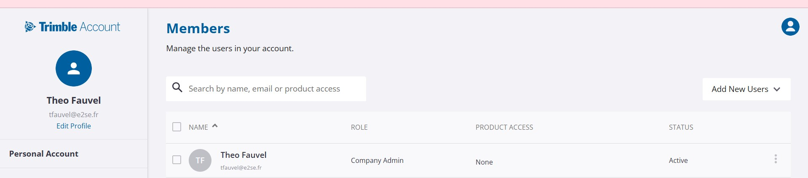
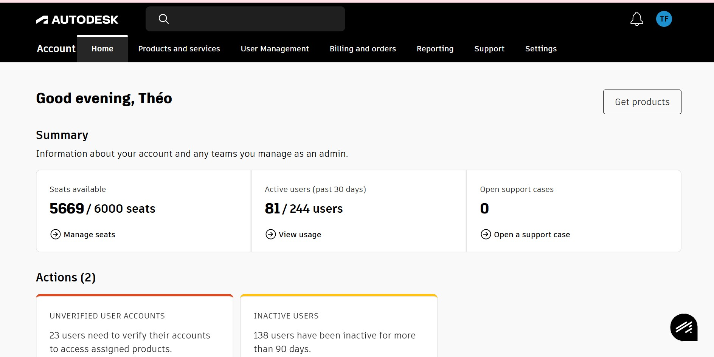

L'E2SE propose des formations en architecture et design d'intérieur qui nécessitent l'utilisation de logiciels 3D professionnels et coûteux : SketchUp (modélisation 3D) et AutoCAD (dessin assisté par ordinateur). Ces licences sont nominatives et gérées via les portails éditeurs respectifs. La gestion manuelle de plusieurs centaines de comptes étant chronophage et sujette aux erreurs, j'ai mis en place une solution d'automatisation.
J'ai développé un script PowerShell qui interroge l'Active Directory pour extraire automatiquement les informations des étudiants. Le script génère un fichier CSV contenant le Nom, le Prénom et le Mail de chaque étudiant, triés par classe. Ce fichier est ensuite importé directement dans les portails SketchUp et AutoCAD pour créer ou mettre à jour les comptes en masse.
# Export des étudiants par classe depuis l'Active Directory Import-Module ActiveDirectory Get-ADUser -Filter * -SearchBase "OU=Etudiants,DC=e2se,DC=local" ` -Properties GivenName, Surname, EmailAddress, Department | Select-Object ` @{N='Prénom';E={$_.GivenName}}, ` @{N='Nom';E={$_.Surname}}, ` @{N='Mail';E={$_.EmailAddress}}, ` @{N='Classe';E={$_.Department}} | Sort-Object Classe, Nom | Export-Csv -Path "export_etudiants.csv" ` -NoTypeInformation -Encoding UTF8

